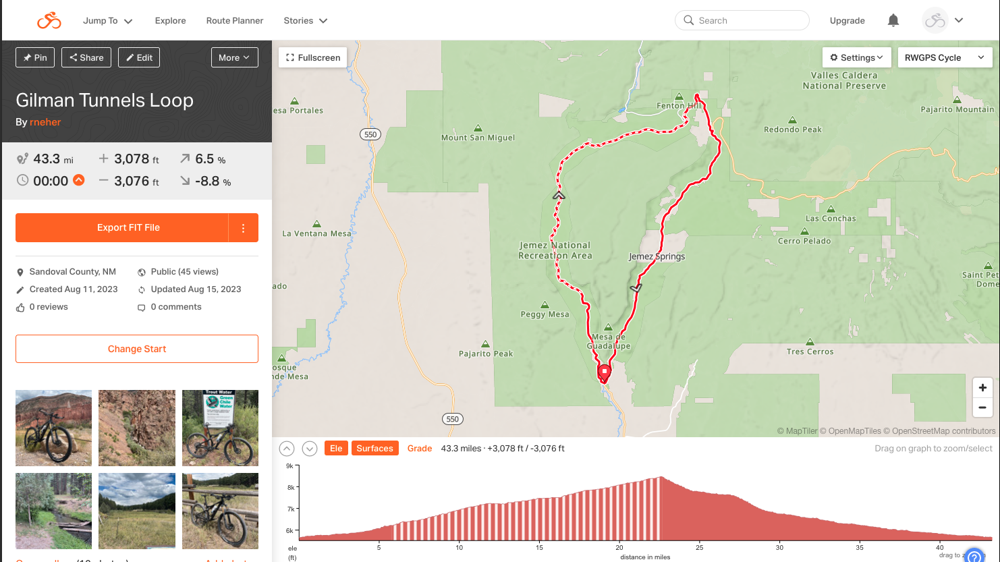
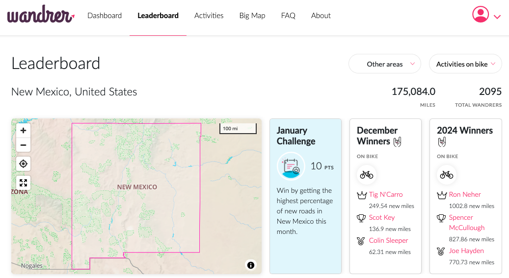
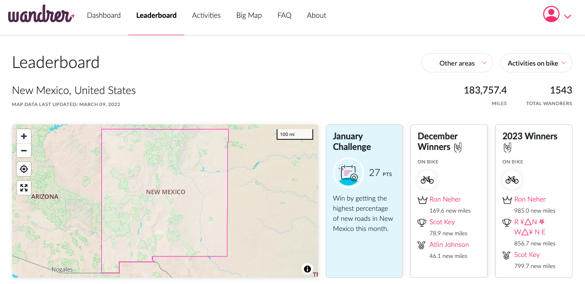
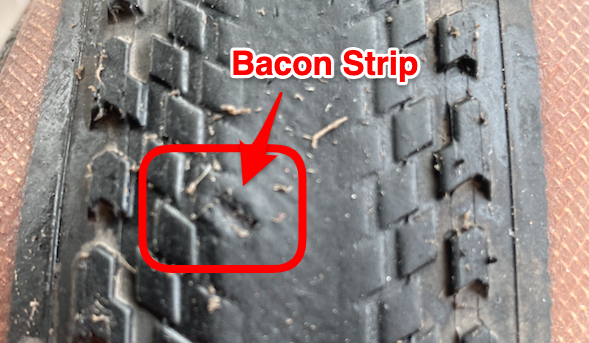
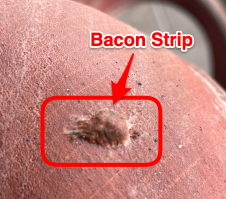
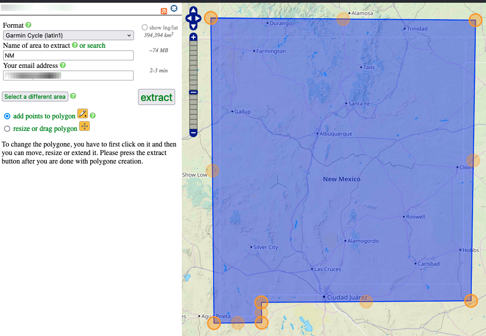

Neher
"one bike ride away from figuring it all out" - Tom Ritchey
"It never gets easier, you just go faster." -Greg LeMond
"My bikes are my medical devices, they measure my lack of fitness and how out of shape I am!" - anonymous
"A million years from now only three things will remain: cockroaches, Hostess Twinkies, and vi." - anonymous
Neher is a repository hosting of my documentation. This documentation is without any warranty or support.
Bicycle

 
Routing with Garmin
NOTE: Manage and Update Your Garmin Device
- Use RidewithGPS with the Wandrer Map Overlay
- Save the route as a fit file to your PC
- Connect Garmin to PC via USB data cable (If it does not mount, your USB cable may only be used for charging)
- Copy the fit file to the Garmin
NewFilesfolder(/GARMIN/Garmin/NewFiles) - Unmount the Garmin from PC
- Disconnect Garmin from PC USB cable
- Additional notes can be found in Garmin Edge 530 - Courses
- Additional notes can be found in Garmin Edge 540 - Courses
- Additional notes can be found in Garmin Edge 840 - Courses
Tubeless road tires
-
As with any tech, shifting (friction vs. indexed) or brakes (rim vs. disc), tubeless road tires require some education and practice on setup, maintenance (monitor and add sealant as needed), and how to fix on the road and at home. All of my bikes are now tubeless except for one road bike that does not have tubeless ready rims. On that road bike I use tubes with removable valve cores and put Stans sealant in the tubes.
 
Road Tires with Tubes
-
For my road bikes with tubes, I run Continental Gator Hardshell (28MM), tubes with removable valve cores, Stans sealant in the tubes, and 80 PSI pressure. I top off with Stans (1 oz) every couple of months. Over two years without a flat in New Mexico.
-
Q: Can I add sealant to my tubes or tubular tires?
- A: Yes, if the tube or tubular has a removable valve core. If there are two opposing flat surfaces just below the top of the valve, you can use our valve tool to unthread the core and sealant can be installed. We recommend injecting 1-2 ounces (30-60ml) of sealant into tubes or tubular tires. Sealant will not damage tubular tires.
Use of e-road bikes on group rides for sag wagon support:
- Carries extra water, tubes, food, clothes, etc.
- Drops back (on climbs, windy days) to pace dropped riders (mechanical / flats) back to the group
- Does most of the pace setting on windy segments / days
- If just riding with a group of non e-assistance riders and not providing sag support then expect to use 8% of your battery per 40 miles
Equipment
- Base layers
- Bike Chain Sleeve
- Bike Computers - Garmin
- Bike Packing Rack
- Bike Rack - 1UP
- Bike Rack - Saris
- Bike Repair Stand
- Bike Saddle
- Bike Spoke - FiberFix Emergency Spoke
- Bike Wheel Turing Stand
- Cycling Clothing for Long Lasting Comfort
- Cycling Mirror
- Digital Caliper
- Disc Brake Pads - TruckerCo
- Mahle X20
- Pedals
- Pump
- Shoes
- Traffic Cone Bag
- Tubeless Sealant
- Wool Cycling Jerseys
My Bikes
My Links
- BBBike Garmin Custom Map Extracts
- Bicycle Rolling Resistance
- Bike Packing
- Bike Registry
- Bike Shop - Austin, TX
- Bike Shop - Corrales, NM
- Bike Shop - Loveland, CO
- Bike Tires Direct
- Bike Tools Etc!
- Gravel Adventure Field Guide
- NiteRider Technical Lighting
- Park Tool: Chain Length Sizing
- Road Bike Rider
- Russ McCoy - Coaching
- Russ McCoy - New Mexico Cycling
- SRAM Brake Pads - Which SRAM brake pads do you need? - When to replace pads and rotors
- SRAM Drivetrain Adjustment Tool
- SRAM Tire Pressure
- Strava
- TrailForks
NOTES:
- Replace brake pads when material and backer plate is 3MM or less (measure with digital caliper)
- Replace brake rotor when rotor track thickness is 1.55MM or less (measure with digital caliper)
- Replace Chain at 0.5% wear
- Torque Specifications and Concepts
Nutrition Advice
- I would recommend a balanced intake of carbs, fatty acids and electrolytes with a hypotonic drink -- A beer and a packet of chips.
What I found for riding many hours in 100+ degree weather:
- 24 ounces of water per hour
- A Rolaids tablet every hour starting on hour 2
- One Aussie Bites (130 calories) every hour
- Pint of milk every 3 hours
Note: If I feel like I’m getting a little jittery / bonk – Drink a pint of milk.
Rides and Videos
Pictures
QR Code
- neher-bike
- neher-bike-chain-waxing
2023 Orbea Gain M21E
Orbea Gain 2023 M21E —- Bike build: My O custom color, Carbon OMR, Mahle X20 with iX350 battery and E-Shifters, SRAM Force eTap AXS, 40t chainring, 10-44T cassette, tubeless Pirelli Cinturato Gravel H 35mm, bike weight 28 pounds / 12.72 kg.
Comments:
- Don't worry about the weight (bike and you)
- Setup tires tubeless (I use Stans sealant and bacon strips to plug larger holes)
- Use tire pressure gauge and SRAM app for tire pressure
- Use power mode one to come up to speed and then to zero
- Use power modes as needed to manage effort / speed
- Recharge if needed for next planned ride
- If just riding with a group of non e-assistance riders and not providing sag support then expect to use 8% of your battery per 40 miles
- The Mahle X20 hub system smoothly provides torque that mirrors your input and feels like you always have a nice tailwind vs. crank / mid drive that feels like someone is pulling you along.
- The Mahle eShifters allows for quick power adjustment from off to levels one, two, and three.
Garmin Maps via BBBike
Note: On Garmin, place the img file into Garmin folder.
